CODING AGENTS AS PIXEL WORLD MODELS
traex/GPT-6.1-Sol · common50_0039
点击播放 · 原生 RGB 像素
逐轮保存的候选
回放视频、检查图与代码变化。
每份候选均可单独播放。实际图片检查记录在下方工具轨迹中。
候选 01播放与检查图
点击播放 · 原生 RGB 像素
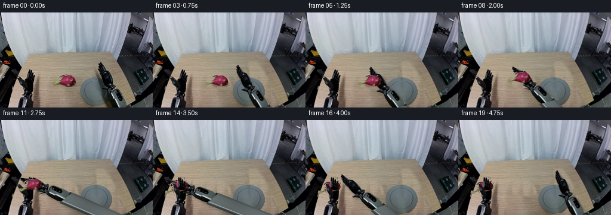
展开代码变化
--- 上一保存版本
+++ 本次保存版本
@@ -0,0 +1,223 @@
+from pathlib import Path
+import math
+import numpy as np
+from PIL import Image, ImageDraw, ImageFilter
+import artifact_io
+
+ROOT = Path(__file__).resolve().parent
+W,H,S=256,160,4
+original=Image.open(ROOT/'first_frame.png').convert('RGB')
+arr=np.asarray(original).astype(float)
+
+def poly_mask(points,size=(W,H),soft=0):
+ m=Image.new('L',(size[0]*S,size[1]*S));d=ImageDraw.Draw(m)
+ d.polygon([(round(x*S),round(y*S)) for x,y in points],fill=255)
+ if soft:m=m.filter(ImageFilter.GaussianBlur(soft*S))
+ return m
+
+right_outline=[(166.9,84.1),(169,84.7),(171,88.7),(172.8,91.3),(175.4,96.1),(176.7,97.6),(178.9,99),(181.3,100),(184,104.7),(187.2,112.8),(188.5,119.7),(188.6,120.9),(193,122.3),(194.5,124.7),(192.7,127.1),(190.2,129.6),(196,128.9),(200,131.5),(205,140),(211,151),(216,159.9),(195.2,164),(188.1,154),(181.9,140.2),(180.8,132.4),(175.3,129.2),(170.6,127.4),(170.2,125.9),(174.9,125.8),(175.9,123.3),(173.4,119.7),(172,116.4),(170.7,111.9),(168.9,108.9),(167.4,105.5),(166.2,102.2),(164.6,98.7),(164.2,97.4),(165.2,96.7),(166.3,98.1),(165.5,95.2),(164.4,92.9),(164.4,91.3),(165.7,90.8),(167.6,94.1),(166.6,90.4),(165.8,88.3),(165.7,86.8),(166.7,86.8)]
+right_hand_outline=right_outline[:19]+[(187.3,132.7),(180.8,132.4)]+right_outline[26:]
+# Separately rigid finger and thumb links can close without distorting the palm.
+right_finger_outline=[(166.9,84.1),(169,84.7),(171,88.7),(172.8,91.3),(175.4,96.1),(176.7,97.6),(178.9,99),(179.6,102.1),(174.1,106),(169,108.9),(167.4,105.5),(166.2,102.2),(164.6,98.7),(164.2,97.4),(165.2,96.7),(166.3,98.1),(165.5,95.2),(164.4,92.9),(164.4,91.3),(165.7,90.8),(167.6,94.1),(166.6,90.4),(165.8,88.3),(165.7,86.8),(166.7,86.8)]
+right_thumb_outline=[(170.3,125.7),(175.4,125.7),(179.4,123.3),(183.3,125),(183,129.1),(177.5,129),(172,127.5),(170.3,127.4)]
+fruit_outline=[(87,119),(88.6,116.3),(91,116.9),(94.3,117.4),(97.9,116.8),(99.6,113.1),(101.7,110.6),(101.6,108.6),(100,108.8),(101,107.2),(104.1,106.1),(108,105.3),(110.7,106),(112.6,105.5),(115.5,106.3),(118.2,106.2),(120.5,107.7),(122.9,109.7),(124.9,112.5),(126.1,116.1),(125.9,119.2),(124.7,121.4),(121.5,123.1),(117.2,124.1),(112,123.7),(107.8,122.6),(104.7,121.6),(101.6,121.1),(98,119.9),(94.9,120.8),(91.7,122),(88,121.4),(86.6,120.5)]
+# Fine bract reaching up and left.
+bract=[(99,109.3),(101.5,108.1),(104.3,107),(107.3,107),(109,107.3),(106.5,106.1),(103.5,105.4),(101,106),(99,107),(98,108.5)]
+fruit_m=poly_mask(fruit_outline)
+fruit_m=Image.fromarray(np.maximum(np.asarray(fruit_m),np.asarray(poly_mask(bract))))
+
+left_outline=[(49.8,96),(51,96.6),(50.9,99.9),(51.8,97.3),(52.6,97.2),(53.5,98.1),(53.2,102.5),(54.3,100.3),(55.4,101.1),(55.2,104.9),(56.7,103.6),(57.7,104.2),(57.7,107.5),(56.6,111.1),(55.3,114.8),(54.3,118.6),(53.6,123.8),(53.2,128.7),(52.8,131.7),(54.8,135.4),(54.2,138.8),(52.3,141),(54.9,145.2),(56.2,150.7),(57,160),(27.1,160),(30.6,148.1),(32.3,144.1),(38.5,143.1),(40,140.8),(37.1,140.6),(36.9,138.1),(38.8,136.4),(40.9,135.1),(39,131.8),(39.5,128.9),(36.7,125.6),(34.9,122.9),(32.7,121.3),(31.5,117.8),(30.7,113.8),(28.3,109.9),(29.6,108.1),(32.1,108.8),(34.8,111.1),(36.8,113.1),(39.3,114.7),(42.2,113.4),(44.1,111.7),(44.8,108.1),(45.5,103.1),(47.1,99.3),(48.8,96)]
+left_digits=[(49.8,96),(51,96.6),(50.9,99.9),(51.8,97.3),(52.6,97.2),(53.5,98.1),(53.2,102.5),(54.3,100.3),(55.4,101.1),(55.2,104.9),(56.7,103.6),(57.7,104.2),(57.7,107.5),(56.6,111.1),(55.3,114.8),(53.2,118.5),(47.7,118.4),(43.7,115.5),(44.1,111.7),(44.8,108.1),(45.5,103.1),(47.1,99.3),(48.8,96)]
+left_thumb=[(28.3,109.9),(29.6,108.1),(32.1,108.8),(34.8,111.1),(36.8,113.1),(39.3,114.7),(41.9,118.1),(42.6,123.5),(40.3,127.4),(37.4,126.4),(34.9,122.9),(32.7,121.3),(31.5,117.8),(30.7,113.8)]
+
+# A clean, non-learned reconstruction of just the table revealed by motion.
+# The grain is sampled from unobstructed wood in the very same photograph.
+yy,xx=np.mgrid[0:H,0:W]
+wood=arr[yy,70+(xx%18)].copy()
+wood += np.stack([-0.11*(xx-78),-0.075*(xx-78),-0.08*(xx-78)],axis=-1)
+# The plate's hidden half is reconstructed from its visible left-hand half.
+cx,cy,rx,ry=160.5,133.6,26.6,24.4
+ell=((xx-cx)/rx)**2+((yy-cy)/ry)**2
+plate=ell<1.03
+reflect_x=np.clip(np.rint(2*cx-xx).astype(int),135,159)
+plate_color=arr[yy,reflect_x].copy()
+plate_color += np.stack([-0.09*np.maximum(xx-cx,0),-0.06*np.maximum(xx-cx,0),-0.03*np.maximum(xx-cx,0)],axis=-1)
+# Keep the known left part entirely unchanged.
+plate_color[xx<160]=arr[xx<160]
+clean=wood.copy()
+clean[plate]=plate_color[plate]
+# Beyond the table boundary, a dark support continues out of view.
+edge=226.9-1.96*(yy-147)
+outside=(yy>147)&(xx>edge)
+clean[outside]=arr[outside]
+# Remove also the soft contact shadow cast by the initial right wrist.
+remove_r=poly_mask([(161,82),(174,82),(187,99),(196,119),(203,135),(218,160),(173,165),(168,151),(163,129),(160,108)],soft=1.7)
+remove_f=poly_mask([(84,116),(97,103),(116,103),(127,108),(132,124),(122,129),(97,126),(86,123)],soft=1.1)
+rm=np.maximum(np.asarray(remove_r),np.asarray(remove_f))/255.0
+rm_small=np.asarray(Image.fromarray(np.uint8(rm*255)).resize((W,H),Image.Resampling.LANCZOS))/255.
+# Don't disturb the nearby left-hand shadow or any stationary background.
+bg_arr=arr*(1-rm_small[...,None])+clean*rm_small[...,None]
+# Clear the original left digits only, for their subtle closing motion.
+left_digit_m=poly_mask(left_digits)
+left_thumb_m=poly_mask(left_thumb)
+left_m=poly_mask(left_outline)
+right_m=poly_mask(right_outline)
+right_finger_m=poly_mask(right_finger_outline)
+right_thumb_m=poly_mask(right_thumb_outline)
+# Wood behind the left fingers has the same grain, but is slightly brighter.
+lrm=np.maximum(np.asarray(left_digit_m),np.asarray(left_thumb_m))
+lrm_small=np.asarray(Image.fromarray(lrm).resize((W,H),Image.Resampling.LANCZOS))/255.
+lwood=arr[yy,65+(xx%17)].copy()+np.array([6,5,3])
+bg_arr=bg_arr*(1-lrm_small[...,None])+lwood*lrm_small[...,None]
+bg=Image.fromarray(np.uint8(np.clip(bg_arr,0,255))).resize((W*S,H*S),Image.Resampling.BICUBIC).convert('RGBA')
+source=original.resize((W*S,H*S),Image.Resampling.BICUBIC).convert('RGBA')
+
+def sprite(mask):
+ im=source.copy();im.putalpha(mask);return im
+
+left_all=sprite(left_m)
+left_base_m=np.array(left_m).astype(float)
+left_base_m*=1-np.array(left_digit_m)/255.
+left_base_m*=1-np.array(left_thumb_m)/255.
+left_base=sprite(Image.fromarray(np.uint8(left_base_m)))
+left_fingers=sprite(left_digit_m)
+left_th=sprite(left_thumb_m)
+fruit=sprite(fruit_m)
+right_fingers=sprite(right_finger_m)
+right_th=sprite(right_thumb_m)
+# Build a long rigid forearm. Its visible upper section uses the actual pixels;
+# only the continuation initially outside the camera is constructed geometrically.
+SW,SH=400,400
+ay,ax=np.mgrid[0:SH*S,0:SW*S]/S
+p=np.array([190.,135.8]);u=np.array([.474,.881]);v=np.array([u[1],-u[0]])
+t=(ax-p[0])*u[0]+(ay-p[1])*u[1]
+q=(ax-p[0])*v[0]+(ay-p[1])*v[1]
+width=12.7-1.1*np.clip(t/240,0,1)
+edge_alpha=np.clip((width-np.abs(q))*S,0,1)*np.clip(t*S+1,0,1)*np.clip((250-t)*S,0,1)
+# Metal housing: fixed cross section, a specular edge, dark underside.
+base_col=92+13*np.cos((q+2)/10)+5*np.sin(t*.071)
+base_col-=43*np.exp(-((q+11)/2.3)**2)
+base_col+=81*np.exp(-((q+7.5)/.65)**2)
+base_col-=12*np.exp(-((q-11)/1.5)**2)
+base_col+=1.5*np.sin(t*2.3+q*.4)
+rgba=np.zeros((SH*S,SW*S,4),np.uint8)
+rgba[:,:,:3]=np.uint8(np.clip(np.stack([base_col*.93,base_col*1.01,base_col*1.015],axis=-1),0,255))
+rgba[:,:,3]=np.uint8(255*edge_alpha)
+arm=Image.fromarray(rgba)
+# Replace the synthetic in-frame portion by the photograph, without stretching.
+upper=poly_mask([(188,133),(196,128.9),(200,131.5),(205,140),(211,151),(216,159.9),(195.2,164),(188.1,154),(181.9,140.2)],size=(W,H))
+# Remove synthetic area within the image where actual silhouette applies.
+a=np.array(arm)
+a[:H*S,:W*S,3]=0
+arm=Image.fromarray(a)
+arm.alpha_composite(sprite(upper),(0,0))
+# The hand and wrist are separate from the rigid forearm.
+hand_m=np.array(right_m).astype(float)
+hand_m*=1-np.asarray(upper)/255.
+hand_m*=1-np.asarray(right_finger_m)/255.
+hand_m*=1-np.asarray(right_thumb_m)/255.
+right_palm=sprite(Image.fromarray(np.uint8(hand_m)))
+
+# Transformations are rigid 2-D projections, never elastic mesh warps.
+def transformed(im,pivot,pos,angle=0):
+ theta=math.radians(angle);c,s=math.cos(theta),math.sin(theta)
+ px,py=pivot[0]*S,pivot[1]*S;tx,ty=pos[0]*S,pos[1]*S
+ coeff=(c,s,px-c*tx-s*ty,-s,c,py+s*tx-c*ty)
+ return im.transform((W*S,H*S),Image.Transform.AFFINE,coeff,resample=Image.Resampling.BICUBIC)
+
+def combined_pose(pivot,pos,angle,local_pivot,local_angle):
+ a=math.radians(angle);c,s=math.cos(a),math.sin(a)
+ off=np.array(local_pivot)-np.array(pivot)
+ target=np.array(pos)+np.array([[c,-s],[s,c]])@off
+ return local_pivot,target,angle+local_angle
+
+def composite(out,layers):
+ for layer in layers:out.alpha_composite(layer)
+
+# Smooth reach, close, lift, transfer, receiving-hand close, and withdraw.
+keys=[
+(0,183,128,0),(1,180.5,128.4,-1),(2,173.5,129,-3),
+(3,161.5,130,-6),(4,146,131,-9),(5,132,131.5,-11),
+(6,125.6,132,-12),(7,125.6,132,-12),
+(8,121.5,125.5,-16),(9,110,118,-24),(10,93,116,-32),
+(11,75,118,-38),(12,64,120.5,-40),(13,64,120.5,-40),
+(14,64,120.5,-40),(15,70,122,-34),(16,91,126,-23),
+(17,124,130,-13),(18,159,129,-5),(19,181,128,-1)]
+# At pickup the fruit remains perfectly stationary until the fingers close.
+wr0=np.array([125.6,132]);angle0=-12
+A0=math.radians(angle0)
+fruit_center=np.array([112.,115.])
+localfruit=np.array([[math.cos(A0),math.sin(A0)],[-math.sin(A0),math.cos(A0)]])@(fruit_center-wr0)
+final_center=None
+frames=[]
+for i,x,y,angle in keys:
+ if i==0:
+ frames.append(np.array(original));continue
+ out=bg.copy()
+ pos=np.array([x,y]);pivot=(183,128)
+ # Receiving hand closes after the fruit is supported in its palm.
+ closeL=np.clip((i-12)/2,0,1)
+ lf=transformed(left_fingers,(48,117),(48,117),-18*closeL)
+ lt=transformed(left_th,(41,126),(41,126),17*closeL)
+ out.alpha_composite(left_base)
+ out.alpha_composite(lf)
+ out.alpha_composite(lt)
+ closeR=0 if i<6 else (0.35 if i==6 else 1)
+ if i>=15:closeR=max(0,1-(i-14)*.6)
+ ra=transformed(arm,pivot,pos,angle)
+ rp=transformed(right_palm,pivot,pos,angle)
+ rfp=combined_pose(pivot,pos,angle,(174,104),-16*closeR)
+ rtp=combined_pose(pivot,pos,angle,(181,127),31*closeR)
+ rf=transformed(right_fingers,*rfp)
+ rt=transformed(right_th,*rtp)
+ # Soft arm shadow only falls on the fixed tabletop/plate.
+ union=np.maximum.reduce([np.array(z.getchannel('A')) for z in [ra,rp,rf,rt]])
+ sh=Image.fromarray(union).filter(ImageFilter.GaussianBlur(2*S))
+ shifted=Image.new('L',(W*S,H*S));shifted.paste(sh,(3*S,4*S))
+ sh_arr=np.asarray(shifted).astype(float)*.21
+ # Limit shadows to the wood tabletop. Do not darken the fixed wall.
+ ty,tx=np.mgrid[0:H*S,0:W*S]/S
+ sh_arr[(ty<72)|(tx<21)]=0
+ shadow=Image.new('RGBA',(W*S,H*S),(8,10,10,0));shadow.putalpha(Image.fromarray(np.uint8(sh_arr)))
+ out.alpha_composite(shadow)
+ composite(out,[ra,rp,rf,rt])
+ if i<=7:
+ fc=fruit_center;fa=0;lift=0
+ elif i<=14:
+ aa=math.radians(angle)
+ fc=pos+np.array([[math.cos(aa),-math.sin(aa)],[math.sin(aa),math.cos(aa)]])@localfruit
+ fa=(angle-angle0)*.5
+ lift=max(0,115-fc[1])
+ if i==14: final_center=fc.copy()
+ else:
+ fc=final_center;fa=-14;lift=3
+ obj=transformed(fruit,tuple(fruit_center),tuple(fc),fa)
+ # Fruit shadow contracts/fades during the lifted part of the trajectory.
+ if i<=7:
+ fruitshadow=Image.new('L',(W*S,H*S));d=ImageDraw.Draw(fruitshadow)
+ d.ellipse((99*S,116*S,129*S,126*S),fill=72)
+ fruitshadow=fruitshadow.filter(ImageFilter.GaussianBlur(1.4*S))
+ sm=Image.new('RGBA',(W*S,H*S),(43,28,13,0));sm.putalpha(fruitshadow)
+ out.alpha_composite(sm)
+ out.alpha_composite(obj)
+ # Fingers wrap the edges while leaving the fruit's pink surface visible.
+ if 6<=i<=14:
+ # Only the distal edge of the right closed fingers is in front.
+ fm=poly_mask([(163,84),(171,84),(177.5,99.5),(173.3,102.5),(166.5,99.5)])
+ digit=sprite(Image.fromarray(np.uint8(np.asarray(fm)*np.asarray(right_finger_m)/255)))
+ front=transformed(digit,*rfp)
+ out.alpha_composite(front)
+ out.alpha_composite(rt)
+ if i>=12:
+ # In the final handoff, the receiving digits are the foremost surface.
+ out.alpha_composite(lf)
+ out.alpha_composite(lt)
+ result=np.asarray(out.convert('RGB').resize((W,H),Image.Resampling.LANCZOS)).astype(np.uint8)
+ frames.append(result)
+
+frames=np.stack(frames)
+artifact_io.save(frames,ROOT)
+# Useful full-resolution candidate sheet for local inspection.
+sheet=Image.new('RGB',(W*5,H*4))
+for i,f in enumerate(frames):sheet.paste(Image.fromarray(f),(i%5*W,i//5*H))
+sheet.save(ROOT/'.tmp'/'all_frames.png')
候选 02播放与检查图
点击播放 · 原生 RGB 像素

展开代码变化
--- 上一保存版本
+++ 本次保存版本
@@ -33,7 +33,7 @@
# A clean, non-learned reconstruction of just the table revealed by motion.
# The grain is sampled from unobstructed wood in the very same photograph.
yy,xx=np.mgrid[0:H,0:W]
-wood=arr[yy,70+(xx%18)].copy()
+wood=arr[yy,65+(xx%18)].copy()
wood += np.stack([-0.11*(xx-78),-0.075*(xx-78),-0.08*(xx-78)],axis=-1)
# The plate's hidden half is reconstructed from its visible left-hand half.
cx,cy,rx,ry=160.5,133.6,26.6,24.4
@@ -92,16 +92,20 @@
p=np.array([190.,135.8]);u=np.array([.474,.881]);v=np.array([u[1],-u[0]])
t=(ax-p[0])*u[0]+(ay-p[1])*u[1]
q=(ax-p[0])*v[0]+(ay-p[1])*v[1]
-width=12.7-1.1*np.clip(t/240,0,1)
-edge_alpha=np.clip((width-np.abs(q))*S,0,1)*np.clip(t*S+1,0,1)*np.clip((250-t)*S,0,1)
-# Metal housing: fixed cross section, a specular edge, dark underside.
-base_col=92+13*np.cos((q+2)/10)+5*np.sin(t*.071)
-base_col-=43*np.exp(-((q+11)/2.3)**2)
-base_col+=81*np.exp(-((q+7.5)/.65)**2)
-base_col-=12*np.exp(-((q-11)/1.5)**2)
-base_col+=1.5*np.sin(t*2.3+q*.4)
+edge_alpha=np.clip((q+9.5)*S,0,1)*np.clip((11.5-q)*S,0,1)*np.clip(t*S+1,0,1)*np.clip((250-t)*S,0,1)
+# The continuation repeats the real forearm's longitudinal material grain,
+# preserving its fixed cross section, metal edge, and dark underside.
+tedge=(159-p[1]-v[1]*q)/u[1]
+tsrc=tedge-1.0-np.mod(np.maximum(t-tedge,0),5.0)
+sx=p[0]+u[0]*tsrc+v[0]*q
+sy=p[1]+u[1]*tsrc+v[1]*q
+x0=np.clip(np.floor(sx).astype(int),0,W-2)
+y0=np.clip(np.floor(sy).astype(int),0,H-2)
+fx=np.clip(sx-x0,0,1)[...,None];fy=np.clip(sy-y0,0,1)[...,None]
+colors=(arr[y0,x0]*(1-fx)+arr[y0,x0+1]*fx)*(1-fy)+(arr[y0+1,x0]*(1-fx)+arr[y0+1,x0+1]*fx)*fy
+colors *= (1-0.035*np.clip((t-25)/190,0,1))[...,None]
rgba=np.zeros((SH*S,SW*S,4),np.uint8)
-rgba[:,:,:3]=np.uint8(np.clip(np.stack([base_col*.93,base_col*1.01,base_col*1.015],axis=-1),0,255))
+rgba[:,:,:3]=np.uint8(np.clip(colors,0,255))
rgba[:,:,3]=np.uint8(255*edge_alpha)
arm=Image.fromarray(rgba)
# Replace the synthetic in-frame portion by the photograph, without stretching.
@@ -204,7 +208,7 @@
if 6<=i<=14:
# Only the distal edge of the right closed fingers is in front.
fm=poly_mask([(163,84),(171,84),(177.5,99.5),(173.3,102.5),(166.5,99.5)])
- digit=sprite(Image.fromarray(np.uint8(np.asarray(fm)*np.asarray(right_finger_m)/255)))
+ digit=sprite(Image.fromarray(np.uint8(np.asarray(fm).astype(float)*np.asarray(right_finger_m)/255)))
front=transformed(digit,*rfp)
out.alpha_composite(front)
out.alpha_composite(rt)
候选 03播放与检查图
点击播放 · 原生 RGB 像素

展开代码变化
--- 上一保存版本 +++ 本次保存版本 @@ -96,7 +96,7 @@ # The continuation repeats the real forearm's longitudinal material grain, # preserving its fixed cross section, metal edge, and dark underside. tedge=(159-p[1]-v[1]*q)/u[1] -tsrc=tedge-1.0-np.mod(np.maximum(t-tedge,0),5.0) +tsrc=tedge-2.2 sx=p[0]+u[0]*tsrc+v[0]*q sy=p[1]+u[1]*tsrc+v[1]*q x0=np.clip(np.floor(sx).astype(int),0,W-2)
候选 04播放与检查图
点击播放 · 原生 RGB 像素
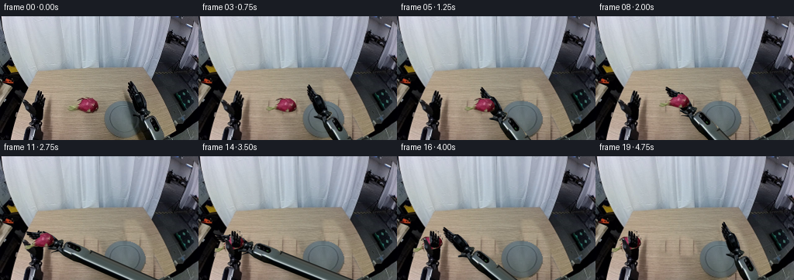
展开代码变化
--- 上一保存版本 +++ 本次保存版本 @@ -33,7 +33,7 @@ # A clean, non-learned reconstruction of just the table revealed by motion. # The grain is sampled from unobstructed wood in the very same photograph. yy,xx=np.mgrid[0:H,0:W] -wood=arr[yy,65+(xx%18)].copy() +wood=arr[yy,75+(xx%9)].copy() wood += np.stack([-0.11*(xx-78),-0.075*(xx-78),-0.08*(xx-78)],axis=-1) # The plate's hidden half is reconstructed from its visible left-hand half. cx,cy,rx,ry=160.5,133.6,26.6,24.4
候选 05播放与检查图
可观测工具轨迹
实际执行的命令与返回图片。
命令 1exit 0
/bin/bash -lc "ls -la && cat prompt.txt && printf '\\n---RULES---\\n' && cat GENERATION_RULES.md"
命令 2exit 0
/bin/bash -lc "cat task_spec.json && cat artifact_io.py && python - <<'PY'
from PIL import Image
im=Image.open('first_frame.png'); print(im.size)
im.resize((1024,640)).save('.tmp/first_large.png')
PY"命令 3exit 0
/bin/bash -lc "python - <<'PY'
from PIL import Image,ImageDraw
im=Image.open('first_frame.png').resize((1024,640))
d=ImageDraw.Draw(im)
for x in range(0,256,10):
d.line((x*4,0,x*4,640), fill=(240,100,90),width=1);d.text((x*4+1,3),str(x),fill='red')
for y in range(0,160,10):
d.line((0,y*4,1024,y*4),fill=(240,100,90),width=1);d.text((0,y*4+1),str(y),fill='red')
im.save('.tmp/grid.png')
PY"命令 4exit 0
/bin/bash -lc "python - <<'PY'
from PIL import Image
im=Image.open('first_frame.png')
for name,box in [('right',(157,78,218,160)),('left',(24,91,62,160)),('fruit',(83,101,130,126))]:
im.crop(box).resize(((box[2]-box[0])*10,(box[3]-box[1])*10),Image.Resampling.NEAREST).save('.tmp/'+name+'.png')
PY"命令 5exit 0
/bin/bash -lc "python - <<'PY'
import numpy as np
from PIL import Image
im=np.array(Image.open('first_frame.png'))
print('sample wood')
for y in [86,100,120,140,150]:
print(y, [(x,im[y,x].tolist()) for x in [66,78,135,150,178,190,205]])
PY"命令 6exit 0
/bin/bash -lc "python - <<'PY'
from PIL import Image
im=Image.open('first_frame.png');im.crop((130,106,216,160)).resize((860,540)).save('.tmp/plate.png')
PY"命令 7exit 0
/bin/bash -lc "cat > generate.py <<'PY'
from pathlib import Path
import math
import numpy as np
from PIL import Image, ImageDraw, ImageFilter
import artifact_io
ROOT = Path(__file__).resolve().parent
W,H,S=256,160,4
original=Image.open(ROOT/'first_frame.png').convert('RGB')
arr=np.asarray(original).astype(float)
def poly_mask(points,size=(W,H),soft=0):
m=Image.new('L',(size[0]*S,size[1]*S));d=ImageDraw.Draw(m)
d.polygon([(round(x*S),round(y*S)) for x,y in points],fill=255)
if soft:m=m.filter(ImageFilter.GaussianBlur(soft*S))
return m
right_outline=[(166.9,84.1),(169,84.7),(171,88.7),(172.8,91.3),(175.4,96.1),(176.7,97.6),(178.9,99),(181.3,100),(184,104.7),(187.2,112.8),(188.5,119.7),(188.6,120.9),(193,122.3),(194.5,124.7),(192.7,127.1),(190.2,129.6),(196,128.9),(200,131.5),(205,140),(211,151),(216,159.9),(195.2,164),(188.1,154),(181.9,140.2),(180.8,132.4),(175.3,129.2),(170.6,127.4),(170.2,125.9),(174.9,125.8),(175.9,123.3),(173.4,119.7),(172,116.4),(170.7,111.9),(168.9,108.9),(167.4,105.5),(166.2,102.2),(164.6,98.7),(164.2,97.4),(165.2,96.7),(166.3,98.1),(165.5,95.2),(164.4,92.9),(164.4,91.3),(165.7,90.8),(167.6,94.1),(166.6,90.4),(165.8,88.3),(165.7,86.8),(166.7,86.8)]
right_hand_outline=right_outline[:19]+[(187.3,132.7),(180.8,132.4)]+right_outline[26:]
# Separately rigid finger and thumb links can close without distorting the palm.
right_finger_outline=[(166.9,84.1),(169,84.7),(171,88.7),(172.8,91.3),(175.4,96.1),(176.7,97.6),(178.9,99),(179.6,102.1),(174.1,106),(169,108.9),(167.4,105.5),(166.2,102.2),(164.6,98.7),(164.2,97.4),(165.2,96.7),(166.3,98.1),(165.5,95.2),(164.4,92.9),(164.4,91.3),(165.7,90.8),(167.6,94.1),(166.6,90.4),(165.8,88.3),(165.7,86.8),(166.7,86.8)]
right_thumb_outline=[(170.3,125.7),(175.4,125.7),(179.4,123.3),(183.3,125),(183,129.1),(177.5,129),(172,127.5),(170.3,127.4)]
fruit_outline=[(87,119),(88.6,116.3),(91,116.9),(94.3,117.4),(97.9,116.8),(99.6,113.1),(101.7,110.6),(101.6,108.6),(100,108.8),(101,107.2),(104.1,106.1),(108,105.3),(110.7,106),(112.6,105.5),(115.5,106.3),(118.2,106.2),(120.5,107.7),(122.9,109.7),(124.9,112.5),(126.1,116.1),(125.9,119.2),(124.7,121.4),(121.5,123.1),(117.2,124.1),(112,123.7),(107.8,122.6),(104.7,121.6),(101.6,121.1),(98,119.9),(94.9,120.8),(91.7,122),(88,121.4),(86.6,120.5)]
# Fine bract reaching up and left.
bract=[(99,109.3),(101.5,108.1),(104.3,107),(107.3,107),(109,107.3),(106.5,106.1),(103.5,105.4),(101,106),(99,107),(98,108.5)]
fruit_m=poly_mask(fruit_outline)
fruit_m=Image.fromarray(np.maximum(np.asarray(fruit_m),np.asarray(poly_mask(bract))))
left_outline=[(49.8,96),(51,96.6),(50.9,99.9),(51.8,97.3),(52.6,97.2),(53.5,98.1),(53.2,102.5),(54.3,100.3),(55.4,101.1),(55.2,104.9),(56.7,103.6),(57.7,104.2),(57.7,107.5),(56.6,111.1),(55.3,114.8),(54.3,118.6),(53.6,123.8),(53.2,128.7),(52.8,131.7),(54.8,135.4),(54.2,138.8),(52.3,141),(54.9,145.2),(56.2,150.7),(57,160),(27.1,160),(30.6,148.1),(32.3,144.1),(38.5,143.1),(40,140.8),(37.1,140.6),(36.9,138.1),(38.8,136.4),(40.9,135.1),(39,131.8),(39.5,128.9),(36.7,125.6),(34.9,122.9),(32.7,121.3),(31.5,117.8),(30.7,113.8),(28.3,109.9),(29.6,108.1),(32.1,108.8),(34.8,111.1),(36.8,113.1),(39.3,114.7),(42.2,113.4),(44.1,111.7),(44.8,108.1),(45.5,103.1),(47.1,99.3),(48.8,96)]
left_digits=[(49.8,96),(51,96.6),(50.9,99.9),(51.8,97.3),(52.6,97.2),(53.5,98.1),(53.2,102.5),(54.3,100.3),(55.4,101.1),(55.2,104.9),(56.7,103.6),(57.7,104.2),(57.7,107.5),(56.6,111.1),(55.3,114.8),(53.2,118.5),(47.7,118.4),(43.7,115.5),(44.1,111.7),(44.8,108.1),(45.5,103.1),(47.1,99.3),(48.8,96)]
left_thumb=[(28.3,109.9),(29.6,108.1),(32.1,108.8),(34.8,111.1),(36.8,113.1),(39.3,114.7),(41.9,118.1),(42.6,123.5),(40.3,127.4),(37.4,126.4),(34.9,122.9),(32.7,121.3),(31.5,117.8),(30.7,113.8)]
# A clean, non-learned reconstruction of just the table revealed by motion.
# The grain is sampled from unobstructed wood in the very same photograph.
yy,xx=np.mgrid[0:H,0:W]
wood=arr[yy,70+(xx%18)].copy()
wood += np.stack([-0.11*(xx-78),-0.075*(xx-78),-0.08*(xx-78)],axis=-1)
# The plate's hidden half is reconstructed from its visible left-hand half.
cx,cy,rx,ry=160.5,133.6,26.6,24.4
ell=((xx-cx)/rx)**2+((yy-cy)/ry)**2
plate=ell<1.03
reflect_x=np.clip(np.rint(2*cx-xx).astype(int),135,159)
plate_color=arr[yy,reflect_x].copy()
plate_color += np.stack([-0.09*np.maximum(xx-cx,0),-0.06*np.maximum(xx-cx,0),-0.03*np.maximum(xx-cx,0)],axis=-1)
# Keep the known left part entirely unchanged.
plate_color[xx<160]=arr[xx<160]
clean=wood.copy()
clean[plate]=plate_color[plate]
# Beyond the table boundary, a dark support continues out of view.
edge=226.9-1.96*(yy-147)
outside=(yy>147)&(xx>edge)
clean[outside]=arr[outside]
# Remove also the soft contact shadow cast by the initial right wrist.
remove_r=poly_mask([(161,82),(174,82),(187,99),(196,119),(203,135),(218,160),(173,165),(168,151),(163,129),(160,108)],soft=1.7)
remove_f=poly_mask([(84,116),(97,103),(116,103),(127,108),(132,124),(122,129),(97,126),(86,123)],soft=1.1)
rm=np.maximum(np.asarray(remove_r),np.asarray(remove_f))/255.0
rm_small=np.asarray(Image.fromarray(np.uint8(rm*255)).resize((W,H),Image.Resampling.LANCZOS))/255.
# Don't disturb the nearby left-hand shadow or any stationary background.
bg_arr=arr*(1-rm_small[...,None])+clean*rm_small[...,None]
# Clear the original left digits only, for their subtle closing motion.
left_digit_m=poly_mask(left_digits)
left_thumb_m=poly_mask(left_thumb)
left_m=poly_mask(left_outline)
right_m=poly_mask(right_outline)
right_finger_m=poly_mask(right_finger_outline)
right_thumb_m=poly_mask(right_thumb_outline)
# Wood behind the left fingers has the same grain, but is slightly brighter.
lrm=np.maximum(np.asarray(left_digit_m),np.asarray(left_thumb_m))
lrm_small=np.asarray(Image.fromarray(lrm).resize((W,H),Image.Resampling.LANCZOS))/255.
lwood=arr[yy,65+(xx%17)].copy()+np.array([6,5,3])
bg_arr=bg_arr*(1-lrm_small[...,None])+lwood*lrm_small[...,None]
bg=Image.fromarray(np.uint8(np.clip(bg_arr,0,255))).resize((W*S,H*S),Image.Resampling.BICUBIC).convert('RGBA')
source=original.resize((W*S,H*S),Image.Resampling.BICUBIC).convert('RGBA')
def sprite(mask):
im=source.copy();im.putalpha(mask);return im
left_all=sprite(left_m)
left_base_m=np.array(left_m).astype(float)
left_base_m*=1-np.array(left_digit_m)/255.
left_base_m*=1-np.array(left_thumb_m)/255.
left_base=sprite(Image.fromarray(np.uint8(left_base_m)))
left_fingers=sprite(left_digit_m)
left_th=sprite(left_thumb_m)
fruit=sprite(fruit_m)
right_fingers=sprite(right_finger_m)
right_th=sprite(right_thumb_m)
# Build a long rigid forearm. Its visible upper section uses the actual pixels;
# only the continuation initially outside the camera is constructed geometrically.
SW,SH=400,400
ay,ax=np.mgrid[0:SH*S,0:SW*S]/S
p=np.array([190.,135.8]);u=np.array([.474,.881]);v=np.array([u[1],-u[0]])
t=(ax-p[0])*u[0]+(ay-p[1])*u[1]
q=(ax-p[0])*v[0]+(ay-p[1])*v[1]
width=12.7-1.1*np.clip(t/240,0,1)
edge_alpha=np.clip((width-np.abs(q))*S,0,1)*np.clip(t*S+1,0,1)*np.clip((250-t)*S,0,1)
# Metal housing: fixed cross section, a specular edge, dark underside.
base_col=92+13*np.cos((q+2)/10)+5*np.sin(t*.071)
base_col-=43*np.exp(-((q+11)/2.3)**2)
base_col+=81*np.exp(-((q+7.5)/.65)**2)
base_col-=12*np.exp(-((q-11)/1.5)**2)
base_col+=1.5*np.sin(t*2.3+q*.4)
rgba=np.zeros((SH*S,SW*S,4),np.uint8)
rgba[:,:,:3]=np.uint8(np.clip(np.stack([base_col*.93,base_col*1.01,base_col*1.015],axis=-1),0,255))
rgba[:,:,3]=np.uint8(255*edge_alpha)
arm=Image.fromarray(rgba)
# Replace the synthetic in-frame portion by the photograph, without stretching.
upper=poly_mask([(188,133),(196,128.9),(200,131.5),(205,140),(211,151),(216,159.9),(195.2,164),(188.1,154),(181.9,140.2)],size=(W,H))
# Remove synthetic area within the image where actual silhouette applies.
a=np.array(arm)
a[:H*S,:W*S,3]=0
arm=Image.fromarray(a)
arm.alpha_composite(sprite(upper),(0,0))
# The hand and wrist are separate from the rigid forearm.
hand_m=np.array(right_m).astype(float)
hand_m*=1-np.asarray(upper)/255.
hand_m*=1-np.asarray(right_finger_m)/255.
hand_m*=1-np.asarray(right_thumb_m)/255.
right_palm=sprite(Image.fromarray(np.uint8(hand_m)))
# Transformations are rigid 2-D projections, never elastic mesh warps.
def transformed(im,pivot,pos,angle=0):
theta=math.radians(angle);c,s=math.cos(theta),math.sin(theta)
px,py=pivot[0]*S,pivot[1]*S;tx,ty=pos[0]*S,pos[1]*S
coeff=(c,s,px-c*tx-s*ty,-s,c,py+s*tx-c*ty)
return im.transform((W*S,H*S),Image.Transform.AFFINE,coeff,resample=Image.Resampling.BICUBIC)
def combined_pose(pivot,pos,angle,local_pivot,local_angle):
a=math.radians(angle);c,s=math.cos(a),math.sin(a)
off=np.array(local_pivot)-np.array(pivot)
target=np.array(pos)+np.array([[c,-s],[s,c]])@off
return local_pivot,target,angle+local_angle
def composite(out,layers):
for layer in layers:out.alpha_composite(layer)
# Smooth reach, close, lift, transfer, receiving-hand close, and withdraw.
keys=[
(0,183,128,0),(1,180.5,128.4,-1),(2,173.5,129,-3),
(3,161.5,130,-6),(4,146,131,-9),(5,132,131.5,-11),
(6,125.6,132,-12),(7,125.6,132,-12),
(8,121.5,125.5,-16),(9,110,118,-24),(10,93,116,-32),
(11,75,118,-38),(12,64,120.5,-40),(13,64,120.5,-40),
(14,64,120.5,-40),(15,70,122,-34),(16,91,126,-23),
(17,124,130,-13),(18,159,129,-5),(19,181,128,-1)]
# At pickup the fruit remains perfectly stationary until the fingers close.
wr0=np.array([125.6,132]);angle0=-12
A0=math.radians(angle0)
fruit_center=np.array([112.,115.])
localfruit=np.array([[math.cos(A0),math.sin(A0)],[-math.sin(A0),math.cos(A0)]])@(fruit_center-wr0)
final_center=None
frames=[]
for i,x,y,angle in keys:
if i==0:
frames.append(np.array(original));continue
out=bg.copy()
pos=np.array([x,y]);pivot=(183,128)
# Receiving hand closes after the fruit is supported in its palm.
closeL=np.clip((i-12)/2,0,1)
lf=transformed(left_fingers,(48,117),(48,117),-18*closeL)
lt=transformed(left_th,(41,126),(41,126),17*closeL)
out.alpha_composite(left_base)
out.alpha_composite(lf)
out.alpha_composite(lt)
closeR=0 if i<6 else (0.35 if i==6 else 1)
if i>=15:closeR=max(0,1-(i-14)*.6)
ra=transformed(arm,pivot,pos,angle)
rp=transformed(right_palm,pivot,pos,angle)
rfp=combined_pose(pivot,pos,angle,(174,104),-16*closeR)
rtp=combined_pose(pivot,pos,angle,(181,127),31*closeR)
rf=transformed(right_fingers,*rfp)
rt=transformed(right_th,*rtp)
# Soft arm shadow only falls on the fixed tabletop/plate.
union=np.maximum.reduce([np.array(z.getchannel('A')) for z in [ra,rp,rf,rt]])
sh=Image.fromarray(union).filter(ImageFilter.GaussianBlur(2*S))
shifted=Image.new('L',(W*S,H*S));shifted.paste(sh,(3*S,4*S))
sh_arr=np.asarray(shifted).astype(float)*.21
# Limit shadows to the wood tabletop. Do not darken the fixed wall.
ty,tx=np.mgrid[0:H*S,0:W*S]/S
sh_arr[(ty<72)|(tx<21)]=0
shadow=Image.new('RGBA',(W*S,H*S),(8,10,10,0));shadow.putalpha(Image.fromarray(np.uint8(sh_arr)))
out.alpha_composite(shadow)
composite(out,[ra,rp,rf,rt])
if i<=7:
fc=fruit_center;fa=0;lift=0
elif i<=14:
aa=math.radians(angle)
fc=pos+np.array([[math.cos(aa),-math.sin(aa)],[math.sin(aa),math.cos(aa)]])@localfruit
fa=(angle-angle0)*.5
lift=max(0,115-fc[1])
if i==14: final_center=fc.copy()
else:
fc=final_center;fa=-14;lift=3
obj=transformed(fruit,tuple(fruit_center),tuple(fc),fa)
# Fruit shadow contracts/fades during the lifted part of the trajectory.
if i<=7:
fruitshadow=Image.new('L',(W*S,H*S));d=ImageDraw.Draw(fruitshadow)
d.ellipse((99*S,116*S,129*S,126*S),fill=72)
fruitshadow=fruitshadow.filter(ImageFilter.GaussianBlur(1.4*S))
sm=Image.new('RGBA',(W*S,H*S),(43,28,13,0));sm.putalpha(fruitshadow)
out.alpha_composite(sm)
out.alpha_composite(obj)
# Fingers wrap the edges while leaving the fruit's pink surface visible.
if 6<=i<=14:
# Only the distal edge of the right closed fingers is in front.
fm=poly_mask([(163,84),(171,84),(177.5,99.5),(173.3,102.5),(166.5,99.5)])
digit=sprite(Image.fromarray(np.uint8(np.asarray(fm)*np.asarray(right_finger_m)/255)))
front=transformed(digit,*rfp)
out.alpha_composite(front)
out.alpha_composite(rt)
if i>=12:
# In the final handoff, the receiving digits are the foremost surface.
out.alpha_composite(lf)
out.alpha_composite(lt)
result=np.asarray(out.convert('RGB').resize((W,H),Image.Resampling.LANCZOS)).astype(np.uint8)
frames.append(result)
frames=np.stack(frames)
artifact_io.save(frames,ROOT)
# Useful full-resolution candidate sheet for local inspection.
sheet=Image.new('RGB',(W*5,H*4))
for i,f in enumerate(frames):sheet.paste(Image.fromarray(f),(i%5*W,i//5*H))
sheet.save(ROOT/'.tmp'/'all_frames.png')
PY
python generate.py"命令 8exit 0
/bin/bash -lc "python - <<'PY'
from PIL import Image
for i in [1,7,12,19]:
Image.open(f'frames/{i:02d}.png').resize((1024,640)).save(f'.tmp/f{i}.png')
PY"命令 9exit 0
/bin/bash -lc "python - <<'PY'
p='generate.py'
s=open(p).read().replace('70+(xx%18)','65+(xx%18)')
s=s.replace('width=12.7-1.1*np.clip(t/240,0,1)\\nedge_alpha=np.clip((width-np.abs(q))*S,0,1)*np.clip(t*S+1,0,1)*np.clip((250-t)*S,0,1)', 'edge_alpha=np.clip((q+9.5)*S,0,1)*np.clip((11.5-q)*S,0,1)*np.clip(t*S+1,0,1)*np.clip((250-t)*S,0,1)')
start=s.index('# Metal housing: fixed cross section')
end=s.index('rgba[:,:,3]=',start)
s=s[:start]+'''# The continuation repeats the real forearm's longitudinal material grain,
# preserving its fixed cross section, metal edge, and dark underside.
tedge=(159-p[1]-v[1]*q)/u[1]
tsrc=tedge-1.0-np.mod(np.maximum(t-tedge,0),5.0)
sx=p[0]+u[0]*tsrc+v[0]*q
sy=p[1]+u[1]*tsrc+v[1]*q
x0=np.clip(np.floor(sx).astype(int),0,W-2)
y0=np.clip(np.floor(sy).astype(int),0,H-2)
fx=np.clip(sx-x0,0,1)[...,None];fy=np.clip(sy-y0,0,1)[...,None]
colors=(arr[y0,x0]*(1-fx)+arr[y0,x0+1]*fx)*(1-fy)+(arr[y0+1,x0]*(1-fx)+arr[y0+1,x0+1]*fx)*fy
colors *= (1-0.035*np.clip((t-25)/190,0,1))[...,None]
rgba=np.zeros((SH*S,SW*S,4),np.uint8)
rgba[:,:,:3]=np.uint8(np.clip(colors,0,255))
''' + s[end:]
# Correct front-finger alpha calculation to avoid 8-bit overflow.
s=s.replace('np.asarray(fm)*np.asarray(right_finger_m)/255', 'np.asarray(fm).astype(float)*np.asarray(right_finger_m)/255')
open(p,'w').write(s)
PY
python generate.py"命令 10exit 0
/bin/bash -lc "python - <<'PY'
p='generate.py';s=open(p).read();s=s.replace('tsrc=tedge-1.0-np.mod(np.maximum(t-tedge,0),5.0)','tsrc=tedge-2.2')
open(p,'w').write(s)
PY
python generate.py
python - <<'PY'
import numpy as np
from PIL import Image
p=np.load('pixels.npz')['pixels']
f=np.asarray(Image.open('frames/00.png'))
assert np.array_equal(f,np.asarray(Image.open('first_frame.png')))
assert p.shape==(160,256,20)
assert len(list(__import__('pathlib').Path('frames').glob('*.png')))==20
for i in [12,19]:Image.open(f'frames/{i:02d}.png').resize((1024,640)).save(f'.tmp/f{i}.png')
print('Validated: 20 frames, 256Ã160, identical initial RGB frame.')
PY"命令 11exit 0
/bin/bash -lc "python - <<'PY'
p='generate.py';s=open(p).read().replace('wood=arr[yy,65+(xx%18)].copy()','wood=arr[yy,75+(xx%9)].copy()')
open(p,'w').write(s)
PY
python generate.py"视觉工具实际返回图片 1
视觉工具实际返回图片 2
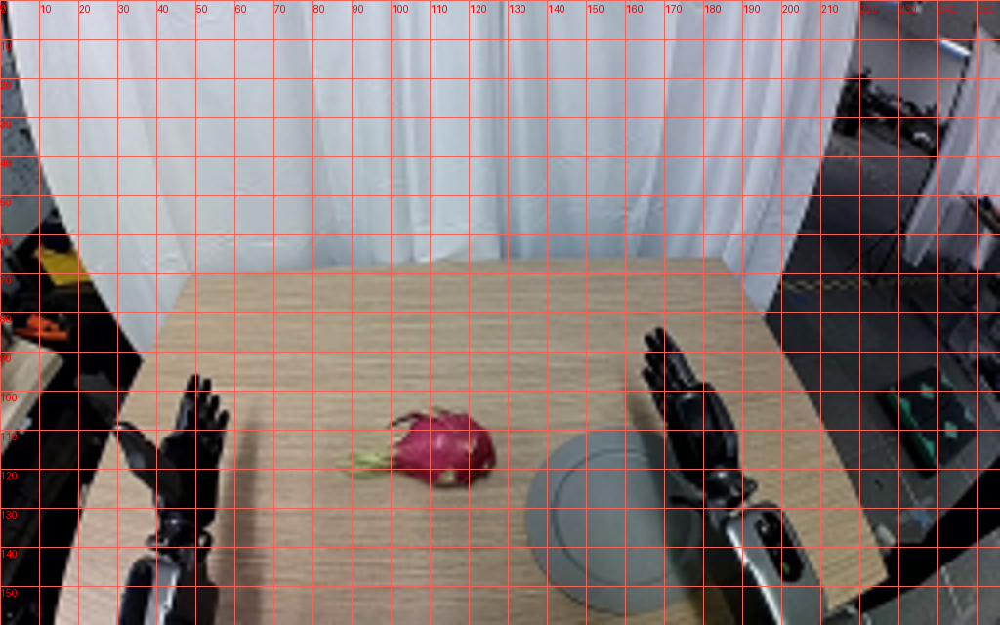
视觉工具实际返回图片 3
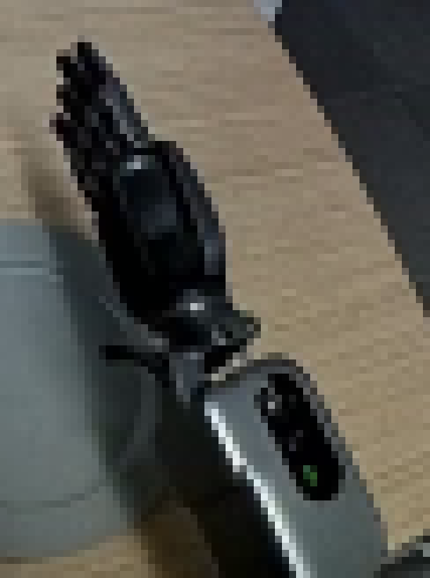
视觉工具实际返回图片 4
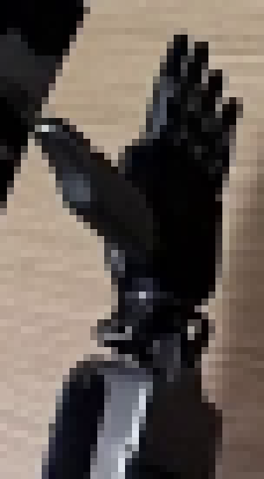
视觉工具实际返回图片 5
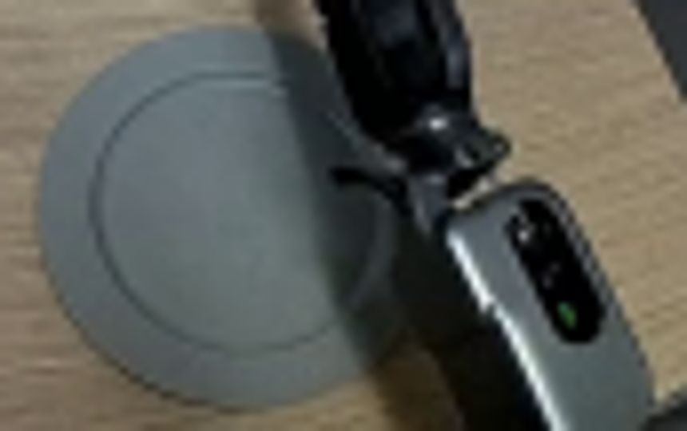
视觉工具实际返回图片 6
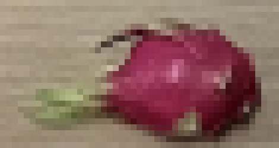
视觉工具实际返回图片 7
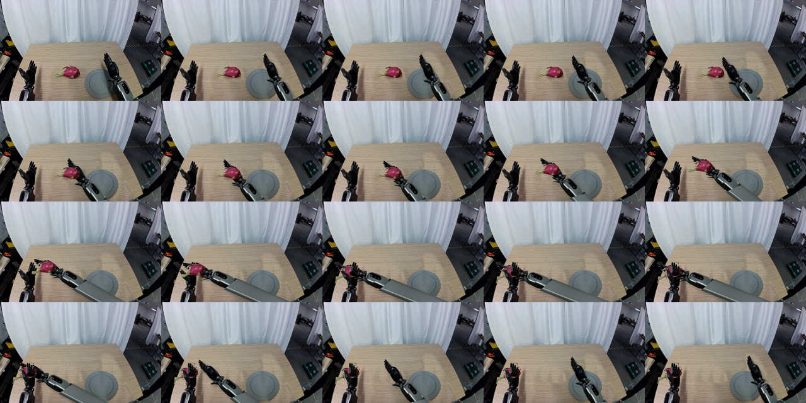
视觉工具实际返回图片 8
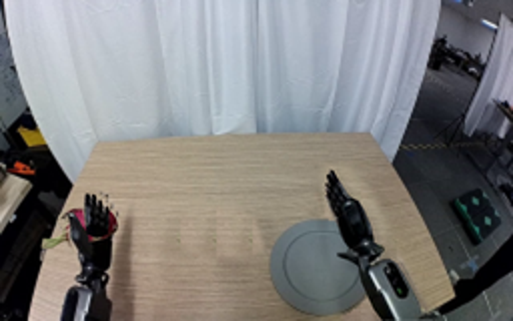
视觉工具实际返回图片 9
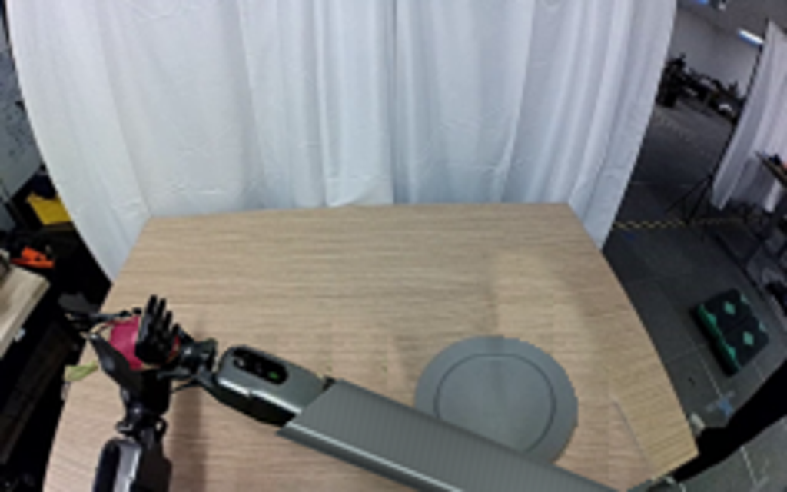
视觉工具实际返回图片 10
视觉工具实际返回图片 11
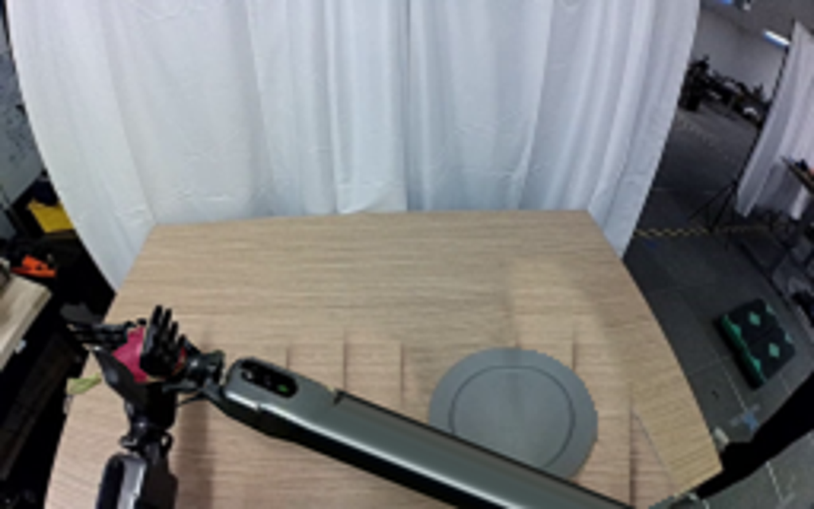
保存候选 5 份；完成命令 11 次；可验证图片返回 11 张。原始 API 响应与完整日志保留在本地。